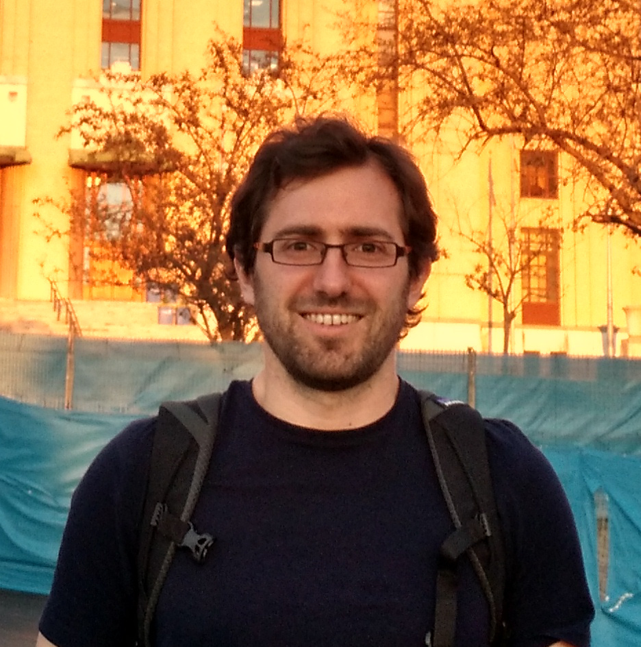
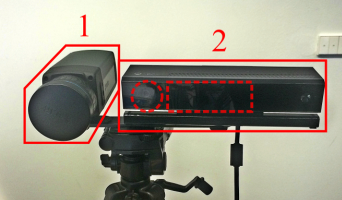

Ignacio Rocco
Willow team
Centre de recherche Inria de Paris
2 rue Simone IFF
75012 Paris, France
✉
Centre de recherche Inria de Paris
2 rue Simone IFF
75012 Paris, France
✉

I am a fourth year PhD student at the Willow team, INRIA/ENS, working under the supervision of Josef Sivic and Relja Arandjelović. Previously, I got a Master's degree in Mathematics/Vision/Machine learning from École Normale Supérieure de Cachan. My research focuses in developing trainable methods for solving the image alignment problem in difficult cases presenting strong appearance variations (including category-level matching and variations in depiction style), or changes in the scene due to the passage of time.
News
07/2019 - Relja Arandjelović gave an Invited Talk presenting my work at BMVA's Geometry and Deep Learning Meeting. 04/2019 - Talk at IMAGINE group at ENPC. 03/2019 - Talk at SMILE seminar at Télécom Paris. 12/2018 - Spotlight oral at NeurIPS'18. 08/2017 - Talk at the Workshop on visual localization and geometric matching at CIIRC, CTU, Prague. 07/2017 - Spotlight oral at CVPR'17. 06/2017 - Attended the Deep Learning and Reinforcement Learning Summer School at MILA, Montreal. 06/2017 - Attended the Machine Learning Student Summit at Google Zurich.Publications
 H. Taira, I. Rocco, J. Sedlar, M. Okutomi, J. Sivic, T. Pajdla, T. Sattler, A. Torii
H. Taira, I. Rocco, J. Sedlar, M. Okutomi, J. Sivic, T. Pajdla, T. Sattler, A. Torii
Is This The Right Place? Geometric-Semantic Pose Verification for Indoor Visual Localization
In Proceedings of the International Conference on Computer Vision (ICCV), 2019.
[Project page][Paper on arXiv]
M. Dusmanu, I. Rocco, T. Pajdla, M. Pollefeys, J. Sivic, A. Torii, T. Sattler
D2-Net: A Trainable CNN for Joint Detection and Description of Local Features
In Proceedings of the IEEE Conference on Computer Vision and Pattern Recognition (CVPR), 2019.
[Project page][Paper on arXiv][PyTorch code]
D2-Net: A Trainable CNN for Joint Detection and Description of Local Features
In Proceedings of the IEEE Conference on Computer Vision and Pattern Recognition (CVPR), 2019.
[Project page][Paper on arXiv][PyTorch code]
I. Rocco, M. Cimpoi, R. Arandjelović, A. Torii, T. Pajdla and J. Sivic
Neighbourhood Consensus Networks
In Proceedings of the 32nd Conference on Neural Information Processing Systems (NeurIPS), 2018. (Spotlight)
[Project page][Paper on arXiv][PyTorch code]
Neighbourhood Consensus Networks
In Proceedings of the 32nd Conference on Neural Information Processing Systems (NeurIPS), 2018. (Spotlight)
[Project page][Paper on arXiv][PyTorch code]
I. Rocco, R. Arandjelović and J. Sivic
End-to-end weakly-supervised semantic alignment
In Proceedings of the IEEE Conference on Computer Vision and Pattern Recognition (CVPR), 2018.
[Project page][Paper on arXiv][PyTorch code]
End-to-end weakly-supervised semantic alignment
In Proceedings of the IEEE Conference on Computer Vision and Pattern Recognition (CVPR), 2018.
[Project page][Paper on arXiv][PyTorch code]
I. Rocco, R. Arandjelović and J. Sivic
Convolutional neural network architecture for geometric matching
In Proceedings of the IEEE Conference on Computer Vision and Pattern Recognition (CVPR), 2017. (Spotlight)
[Project page][Paper on arXiv][MatConvNet code][PyTorch code]
Convolutional neural network architecture for geometric matching
In Proceedings of the IEEE Conference on Computer Vision and Pattern Recognition (CVPR), 2017. (Spotlight)
[Project page][Paper on arXiv][MatConvNet code][PyTorch code]

I. Rocco, M. Goncalves Almeida Antunes, D. Aouada and B. Ottersten
RGB-D and Thermal Sensor Fusion
In 11th International Joint Conference on Computer Vision, Imaging and Computer Graphics Theory and Applications (VISAPP), 2016.
[Paper on Scitepress][PDF]
RGB-D and Thermal Sensor Fusion
In 11th International Joint Conference on Computer Vision, Imaging and Computer Graphics Theory and Applications (VISAPP), 2016.
[Paper on Scitepress][PDF]